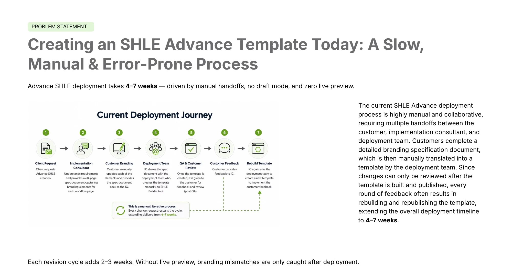
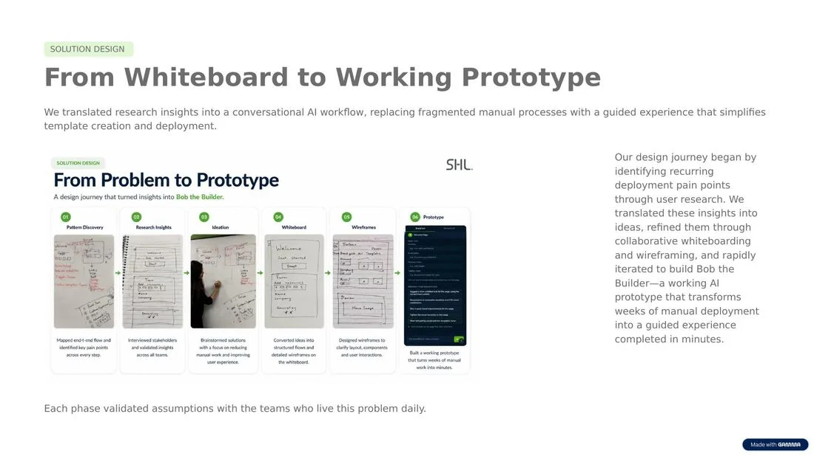
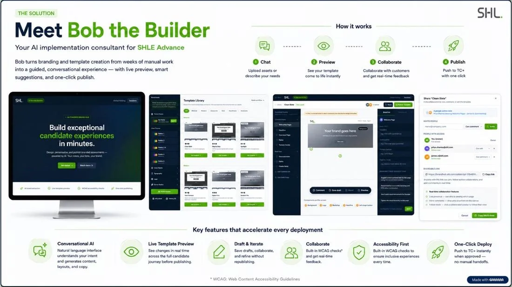
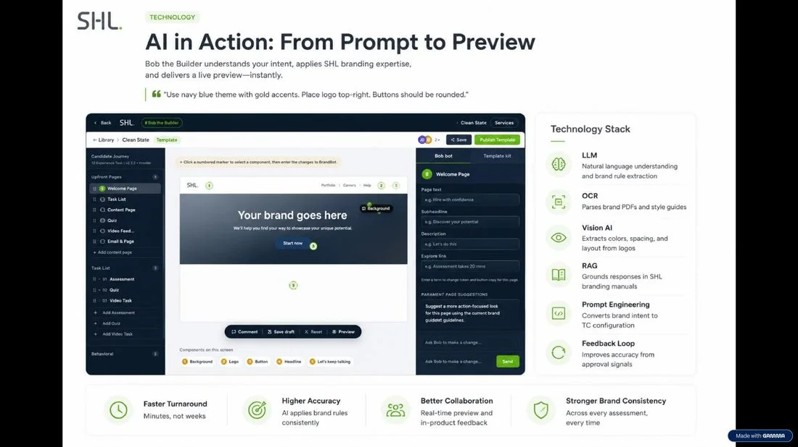
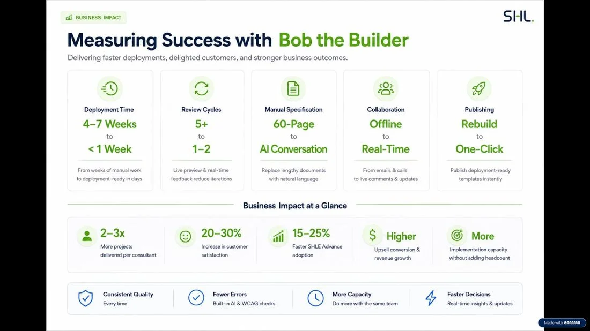
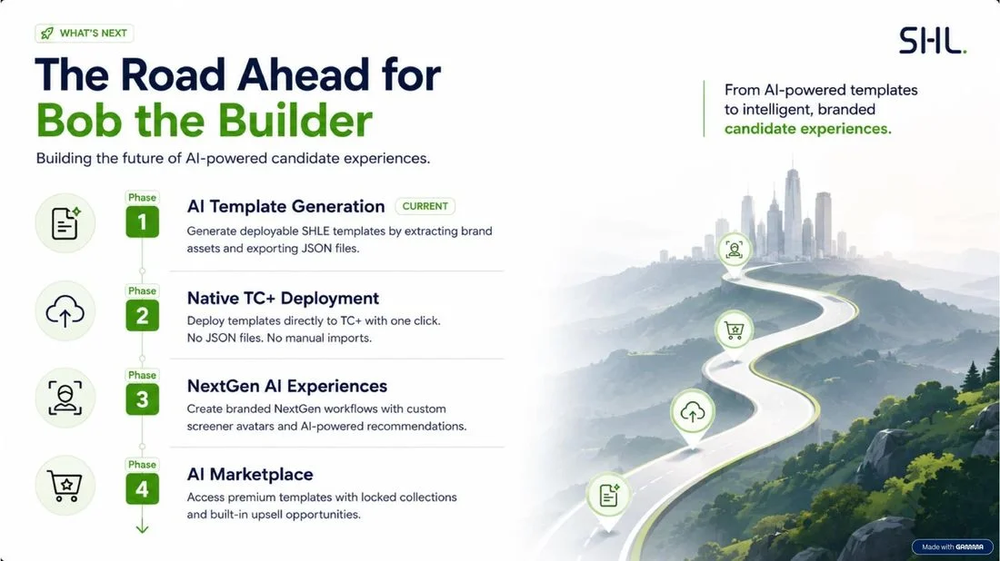

SHL · AI hackathon · Team "Prompt and Pixels"
Bob the Builder: weeks of manual branding, turned into a conversation.
An AI implementation consultant for SHL's Advanced SHLE candidate experiences. Clients describe their brand once, and it builds, live-previews and publishes every template page a deployment team used to hand-build over 4–7 weeks.
- My role
- Product & UX design
- Team
- Prompt and Pixels, 3–4 people
- Timeline
- 2-day hackathon
- Status
- Top 20 of 35 teams · results awaited

to deploy one Advanced SHLE template today, end to end
branding specification clients fill in by hand
review cycles, each one a rebuild and republish
The problem
A slow, manual process, at the moment a client decides whether to invest more in SHL.
SHL offers two candidate-experience tiers: Essential, a basic off-the-shelf experience with limited branding, and Advanced SHLE, a fully bespoke experience the deployment team builds by hand in the SHLE builder.
The process takes multiple handoffs between the customer, an implementation consultant and the deployment team. A client completes a 60-page branding specification, which is translated into a template by hand, with no draft mode and no live preview. The client can only review the result once it is built and published, so every round of feedback usually means a rebuild. Each revision adds 2–3 weeks.

From the submission deck: the current, fully manual deployment journey.
What the people who live this process told us:
Deployment team
“Since there is no preview, every client revision means rebuilding the template from scratch.”
Implementation consultants
“A two-week change request can derail the entire delivery plan.”
Project managers
“Customers can't see the journey until it's published.”
Presales & commercial
“Deployment delays are the top reason clients hesitate to upgrade.”
Key finding: deployment friction, not the product itself, was the main obstacle to SHLE Advance adoption and upsell.
My role
Two days, a small team, and a problem that needed framing before it needed screens.
- Spoke to deployment, implementation, project management and presales stakeholders to find the real bottleneck, and synthesised it into the key finding that framed the brief.
- Led the product and UX thinking: the journey from pattern discovery to prototype.
- Defined the core interaction: click a numbered marker on any live element, describe the change in plain language to BrandBot, see it update instantly. This replaces the 60-page spec.
- Shaped the information architecture: templates as full layout families with their own pages, and one candidate workflow built from exactly one template.
- Worked with engineering on feasibility, and co-wrote the submission.

Pattern discovery → research insights → ideation → whiteboard → wireframes → prototype.
The solution: Bob the Builder
Bob turns branding and template creation into a guided, conversational experience with live preview, smart suggestions and one-click publish. The loop is four steps: chat, preview, collaborate, publish.

Chat → Preview → Collaborate → Publish.
Conversational AI
A natural-language interface that understands intent and generates content, layouts and copy.
Live template preview
Changes render across the full candidate journey, not after a build cycle.
Draft & iterate
Save drafts and refine without republishing the whole template.
Collaborate
Live presence, inline comments and follow mode, so customers review with the team instead of over email.
Accessibility first
Built-in WCAG checks on every template.
One-click deploy
Export JSON into TC+ today, with native publish on the roadmap.
Under the hood
Bob understands intent, applies SHL's branding expertise and renders a live preview. A typical prompt: “Use navy blue theme with gold accents. Place logo top-right. Buttons should be rounded.”

The technology stack behind the editor, from the submission deck.
LLM
Natural language understanding and brand-rule extraction.
OCR
Parses brand PDFs and style guides.
Vision AI
Extracts colours and layout cues from a logo.
RAG
Grounds responses in SHL's branding guidance.
Prompt engineering
Converts brand intent into TC+ configuration.
Feedback loop
Improves prompt-to-output accuracy from approvals.
The product, screen by screen

Brand setup: a link, a file or a plain description, and Bob takes it from there.

Template library: editing the palette updates every template preview live.

The editor: numbered markers hand off into a contextual chat with BrandBot.

Share & collaborate: live presence, comments and permissions.
The demo
We submitted a walkthrough video to the judging team, covering the problem, the projected impact and a live tour of brand intake, the template library and the conversational editor. Here is the narration.
Read the walkthrough narration (~5 min)
[0:00] Bob the Builder is your AI implementation consultant for SHLE Advance, turning branding and template creation from weeks of manual work into a guided, conversational experience. Upload assets or describe your needs, see your template come to life instantly with live preview, collaborate with real-time feedback, and push to TC+ with one click. Key features include a natural language interface, live template preview, built-in WCAG accessibility checks, and one-click deployment.
[0:32] Today, deploying an Advanced SHLE template takes four to seven weeks, driven by manual handoffs, no draft mode, and zero live preview. The process requires multiple handoffs between the customer, implementation consultant, and deployment team, starting with a detailed branding specification document, which is then manually translated into a template. Since changes can only be reviewed after the template is built and published, every revision often means rebuilding from scratch, adding two to three weeks each time. Without live preview, branding mismatches are only caught after deployment.
[1:08] With Bob the Builder, we see improvements across every dimension. Deployment time drops from four to seven weeks to under one week. Review cycles shrink from five or more to just one or two. The sixty-page manual specification is replaced entirely by AI conversation. Collaboration shifts from offline calls and emails to real-time feedback, and publishing becomes a single click. At the business level, this translates to two to three times more projects per consultant, a twenty to thirty percent increase in customer satisfaction, and fifteen to twenty-five percent faster SHLE Advance adoption, all without added headcount.
[1:48] Now, let's take a look at the builder. After signing in, the first thing to do is add your brand name, then choose how to describe it. You can paste a link, upload files, or just describe your brand in plain text. BrandBot generates starter templates for you. The AI runs and fills the palette and typography fields on the left. These are the exact primary and secondary colors it found, and here's the typography it identified. If your logo wasn't detected, you can upload it manually.
[2:08] You can also adjust the corner roundness. If you want to try different color combinations, these preset themes are already built from your brand, or set a color manually. Once ready, publish and the journey starts.
[2:33] You can add new pages for the template you chose, or duplicate ones you want to reuse. This is the task list text section, or add a content section or an assessment if you need one. One key feature of this editor: just click on any section. To edit the background, just click on its marker, and you'll get some recommended changes from BrandBot.
[3:04] Click on one of the suggestions, hit apply, and it updates instantly. You can also type in any other prompt for whatever else you want to change: add a welcome message, a subtitle, and button text. If you'd rather not use the AI, there's a manual option. Pick any background color or enter one yourself, and it updates on the platform right away.
[3:44] BrandBot can recolor elements to match the page and template. All these options are built into the editor. There are also collaboration features: invite others, work together live, let them preview, comment, and follow their cursor. In the comment area, type something like "change this to our brand color."
[4:48] It gets added, and anyone making changes sees it live. You can also update the background image: upload a new one and it applies instantly. You can export a JSON file and import it straight into TC+, carrying everything over automatically. When you're happy with everything, hit publish. You can keep exploring or come back anytime.
Projected impact
These are projections from the submission, not realised results.

Before and after across five dimensions of the deployment process.
Deployment time
4–7 weeks → under 1 week
Review cycles
5+ → 1–2
Brand input
60-page spec → AI conversation
Collaboration
Offline → real-time
Publishing
Rebuild → one click
more projects per consultant, with no added headcount
projected increase in customer satisfaction
faster SHLE Advance adoption
What's next
The submission proposed four phases, from AI-generated templates to a marketplace.

The proposed four-phase roadmap.
Phase 1 · Current
AI template generation: extract brand assets and export deployable JSON.
Phase 2
Native TC+ deployment, with no JSON files or manual imports.
Phase 3
NextGen AI experiences: custom screener avatars and AI recommendations.
Phase 4
AI marketplace: premium templates with built-in upsell.
Reflection
Let research reframe the brief. It started as “fix the branding tool”. Talking to the people who run the process turned it into “deployment friction is the real blocker”.
Get the hierarchy right before the UI. The template → pages → workflow structure was corrected several times as we built. I'd pressure-test the data model earlier.
Prototype fast, even roughly. A clickable flow surfaced disagreements about scope far faster than static screens would have.